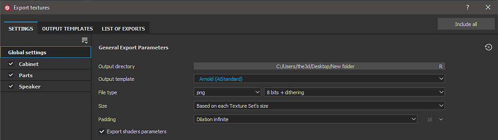

Substance Painter 2020.1 (6.1.0) ships with Output Templates for Arnold using the aiStandard material.

| Substance Painter Export | Arnold AiStandardSurface |
|---|---|
| BaseColor | Base / Color |
| Roughness | Specular / Roughness |
| Metalness | Base / Metalness |
| Normal | (Maya) Geometry/ Bump Mapping / bump2d (Use as Tangent Space Normals) |
| Height | (Maya) Displacement Shader / displacement (3ds Max) Object modifier → Arnold Properties → Displacement → Use Map |
| Emissive | Emission/ Color (Emission Weight = 1.0) |
| Anisotropy Level (not included in default Arnold Output template) | (Maya) Coat/ Anisotropy (3ds Max) Coat/ Anisotropy |
| Anisotropy Level (not included in default Arnold Output template) | (Maya) Coat/ Rotation (3ds Max) Coat/ Rotation |
Maps that represent data will need to be interpreted correctly. Please see the Color Management page for more information.